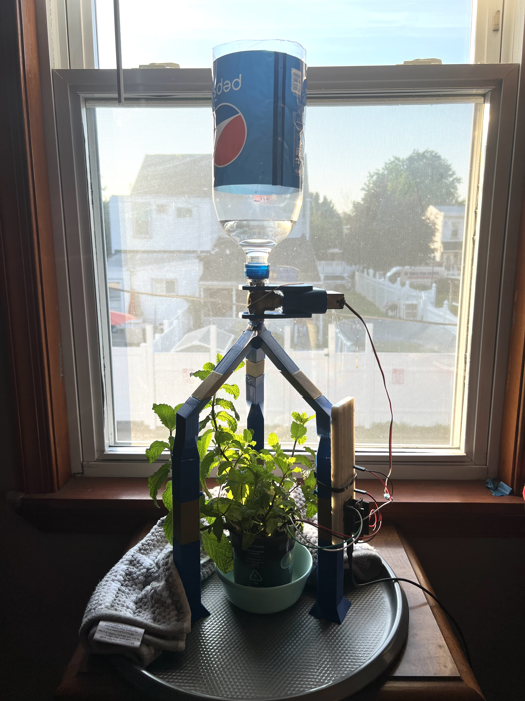

Electrical Engineering major
Hi, my name is Sofia D'Alessandro. I am from New Jersey. I am a fourth year Electrical Engineering major at Drexel University. I have a passion for space, physics, and semiconductors. Outside of the classroom, I have many hobbies and interests that keep me busy and fulfilled. Some of my favorites are the following.
Soccer is and always will be one of my biggest passions. I have been playing soccer since I was three years old. I play goalie and defense. I am currently on Drexel's Women's Club Soccer Team.
Drexel Women's Club Soccer TeamSkiing is one of my favorite things to do. You can find me on the slopes every winter. While most of my skiing occurs in the Pocono Mountains, I have had the opportunity to ski in Hunter, New York, Snowshoe, West Virginia, and Killington, New York.
One of my more creative hobbies is photography. I enjoy taking pictures and taking a good picture never fails to satisfy me. I got into photography when I got my first camera years ago but my interest only grew after I took a photography class and learned how to take thoughtful pictures.
A recently discovered passion of mine is Brazilian Jiu-Jitsu. I have been training for about one year and a half at Strive Brazilian Jiu Jitsu Academy in Voorhees, NJ. I am a blue belt and have competed in five competions so far where I have won one gold medal, two silver medals, and one bronze medal.
Strive Brazilian Jiu Jitsu AcademyMulti-Element Integration & Test Engineer, September 2024 to Present
Electrical Engineering Co-op, September 2023 to March 2024
Electrical Engineer Co-op, September 2022 to March 2023
Part-Time Office Assistant, September 2020 to September 2022
Undergraduate Researcher, March 2022 to June 2022
Mentor, September 2017 to November 2019
During my first year at Drexel, I took a course called First-Year Engineering Design. This course is a way to prepare students for the eventual series of Senior Design course they will have to take in their final year. For our freshman design project, my groupmates and I built a fully-automated plant watering system using Arduino. A moisture sensor was placed inside the soil of a plant. The moisture sensor would take a measurement every five minutes. If it did not detect enough moisture, a servo motor would open a valve and allow water to flow into the soil for a set amount of time, and then it would close the valve. This project required programming in the Arduino IDE, designing and 3D printing the devices using CAD software, assembling the device, and technically communicating procedures and results.

For my first co-op at Drexel, I worked for the National Radio Astronomy Observatory's Central Development Laboratory. My position involved working at the University of Virginia's state-of-the-art Innovations in Fabrication, or IFAB, cleanroom. The NRAO and UVA
Check out my co-op experience at NRAOThis past term, I took ECE Laboratory, which was all about Arduino. The course consisted of a number of different projects you can do with an Arduino Uno R4 WiFi. It covered topics such as controlling the behavior of LEDs, using sensors to take measurements and then displaying the results, and even wirelessly communicating with another Arduino. Throughout the term, all of the reports for each individual project were combined into one growing lab report.
Click to download a PDF of my Lab ReportThe following list includes some of the professional associations that I am involved with or will be in the future.
IEEE is a professional association and global community for electrical engineering, electronics engineering, and other related disciplines. It is the world's largest technical professional organization dedicated to advancing technology for the benefit of humanity.
IEEESWE is a nonprofit professional organization that supports and promotes women in engineering and technology fields.
SWEEWB is a nonprofit organization that partners with communities around the world to design and implement sustainable engineering projects that improve quality of life. It is a way to apply technical skills in real-world, socially impactful ways.
EWBAAS is the major organization of professional astronomers in North America. It is dedicated to the advancement of astronomy and related sciences, including astrophysics, planetary science, solar physics, and space science
AASPlease contact me if you have any inquiries!